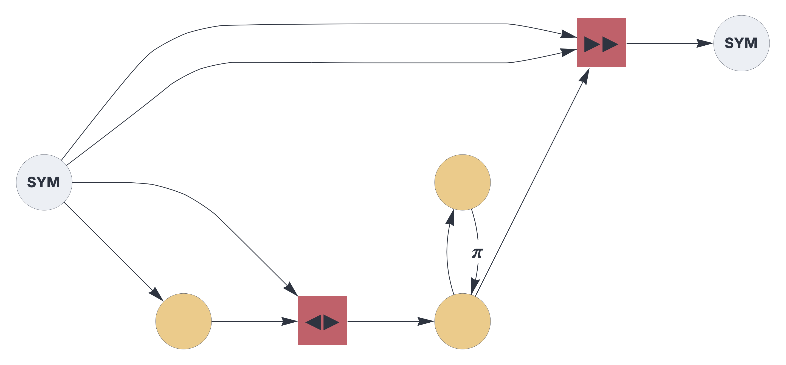

CIRCUIT CONFIGURATON
Circuits
Within this framework, circuits represent networks of Topological Associative Memory instances encapsulated in circuit components and connected through pathways.
See also: https://creatingintelligence.org/#circuits
Circuit configuration
Circuits are specified by a JSON string or the equivalent Python dictionary:
{ "options": {"name": "Reservoir"},
"hyperparameters": {"default": [2000, 8], "61": [2000, 8]},
"dataflow": [
{"component": "input", "plugin": "codec", "send": [11]},
{"component": "delay", "send": [21], "receive": [11]},
{"component": "heteroencoder", "send": [51], "receive": [11, 21]},
{"component": "delay", "send": [61],
"receive": [[51, {"slot": 62, "tags": ["permute"]}]]},
{"component": "delay", "send": [62],
"receive": [61], "rate_limit": 3.0},
{"component": "predictor", "send": [101], "receive": [11, [11, 61]]},
{"component": "output", "plugin": "codec", "receive": [101]}
]}The above configuration rendered as circuit schematics:

Details and properties
- Circuits are composed of stateful components connected through stateless pathways.
- Dataflow is synchronized, governed by a global clock.
- At every time step, components process their current input and pass it into the output buffer.
- A circuit must include at least one input and one output component.
- Circuits can be nested.
| Property | Description |
|---|---|
$schema |
link to JSON schema |
options |
global circuit options |
hyperparameters |
pathway dimensions and populations |
dataflow |
nodes and edges of the circuit graph |
options
| Property | Description |
|---|---|
name |
the circuit’s registry identifier, used for embedding circuits |
multiplex |
temporal gating pattern, given as a list of 0s or 1s (optional) |
hyperparameters
| Property | Description |
|---|---|
default |
default slot dimension and population [N, P] |
integer |
a specific slot’s dimension and population [N, P] |
dataflow
| Property | Description |
|---|---|
component |
the component’s factory function name |
plugin |
plugin factor function name (optional) |
send |
output slots, given as a list of integers |
receive |
list of input slots or tagged pathways |